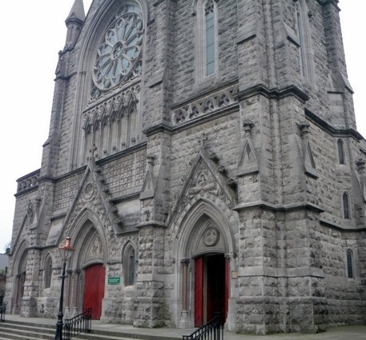

St Mary's Roman Catholic Church
St Mary's was built between 1884 and 1892 to a design by Drogheda architect PJ Dodd and is another large modern Gothic design similar to St Peter's Catholic Church. St Mary's is dominated by its slender spire and has three gabled entrances which lead to a very dark, dramatic interior which is highly decorated. Only one side of the aisle has windows and these are filled with dark stained glass.